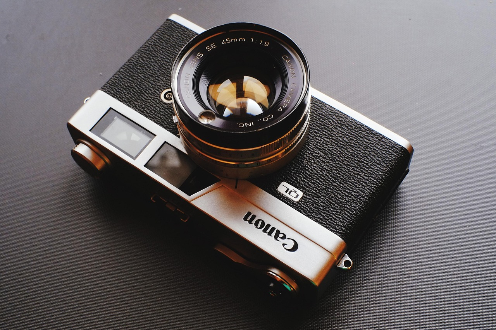

CPO 패키징 소재·공정 기술 경쟁 본격화

인공지능(AI) 데이터센터의 전송 대역폭 한계를 극복할 핵심 기술로 공동패키지 광학(CPO·Co-Packaged Optics)이 급부상하면서, 글로벌 반도체 장비 및 패키징 소재 업체들이 관련 기술 개발에 총력을 기울이고 있다. CPO는 광 트랜시버를 칩과 동일한 패키지에 통합해 신호 손실을 줄이고 전력 효율을 높이는 차세대 패키징 방식이다.
오스트리아 EV그룹(EVG)은 최근 CPO 제조 공정 전반에 걸친 기술 솔루션을 공개했다. EVG는 수십 년간 웨이퍼 본딩과 이종 집적(Heterogeneous Integration) 분야에서 쌓은 공정 노하우를 CPO 제조에 적용하고 있다. 광자 집적 회로(PIC) 제작, 고정밀 정렬 본딩, 3D 패키징 등 CPO 가치사슬의 여러 단계를 커버하는 통합 공정 역량이 강점이다.
쿨리케앤소파(Kulicke & Soffa·K&S) 역시 CPO 및 첨단 패키징 분야의 기술 리더십 강화를 공식화했다. K&S는 자사의 와이어 본딩, 열압착 본딩(TCB), 플립칩 솔더 접합 기술을 CPO 모듈 제조에 통합 적용하는 방향으로 제품 포트폴리오를 재편하고 있다. 이 회사의 첨단 패키징 장비는 AI 인프라용 고밀도 패키징에서 이미 광범위하게 채택되고 있다.
CPO 기술이 주목받는 핵심 이유는 데이터 전송 속도와 에너지 효율이다. 기존 방식은 칩 외부의 별도 광모듈을 통해 신호를 주고받는데, 이 과정에서 전력 손실이 크고 대역폭에 한계가 생긴다. CPO는 광 인터페이스를 칩과 수 밀리미터 이내에 배치함으로써 전력 소모를 최대 절반 가량 줄일 수 있다.
CPO 제조에서 가장 어려운 기술적 과제는 광 정렬 정밀도다. 광섬유와 광자 집적 회로의 결합 오차가 수백 나노미터 수준에서도 성능에 영향을 미치기 때문에, 본딩 장비와 소재의 정밀도 요구 수준이 기존 전자 패키징을 크게 상회한다. 이 부분이 소재 업계에서 가장 치열하게 기술 개발이 이뤄지는 영역이다.
소재 관점에서는 저손실 광도파로 소재, 고열전도성 언더필(Underfill) 소재, 광학 접착제 등이 CPO 핵심 소부장으로 꼽힌다. 국내에서는 삼성SDI, 동진쎄미켐 등이 관련 소재 개발을 진행 중이며, 해외에서는 DOW케미칼, 헨켈 등 글로벌 화학 기업들이 CPO 전용 소재 라인업을 확충하고 있다.
시장 규모도 빠르게 커지고 있다. 시장조사기관들의 추정에 따르면 CPO 관련 장비·소재·부품 시장은 2025년 약 5억 달러에서 2030년에는 50억 달러를 넘어설 것으로 전망된다. 연평균 성장률이 60%에 육박하는 초고속 성장 시장이다.
국내 패키징 소재 업계도 CPO 전환에 촉각을 세우고 있다. 현재까지는 전통적인 패키징 소재 사업 비중이 높지만, CPO 채택이 가속화되면 기존 패키징 소재 수요 구조 자체가 바뀔 수 있다. 일부 국내 소재 기업들은 CPO 대응 소재 개발을 위해 해외 연구기관과 공동 프로젝트를 추진하고 있다.
미국 메이저 클라우드 사업자들인 구글, 메타, 마이크로소프트는 차세대 데이터센터 설계에 CPO를 필수 요소로 채택하는 방향을 공식화했다. 이는 CPO 공급망에 속한 소재·장비·부품 업체들에게 장기적이고 안정적인 수요 기반이 형성됨을 의미한다.
업계 전문가들은 "CPO는 AI 인프라 확장의 병목 구간인 칩 간 데이터 전송 문제를 근본적으로 해결하는 기술"이라며 "소재와 장비에서의 기술 혁신이 CPO 상용화 속도를 결정짓는 핵심 변수"라고 진단한다. 특히 광-전 변환 효율을 높이는 신규 소재 개발이 향후 2~3년의 시장 판도를 가를 것으로 전망된다.
향후 CPO 기술의 주도권 경쟁은 장비 정밀도, 소재 성능, 양산 수율이라는 세 축을 중심으로 전개될 것으로 예상된다. 국내 소부장 기업들이 이 경쟁에서 의미 있는 위치를 차지하려면 기술 개발 투자와 글로벌 공급망 진입 전략을 서둘러야 한다는 게 업계의 공통된 인식이다.